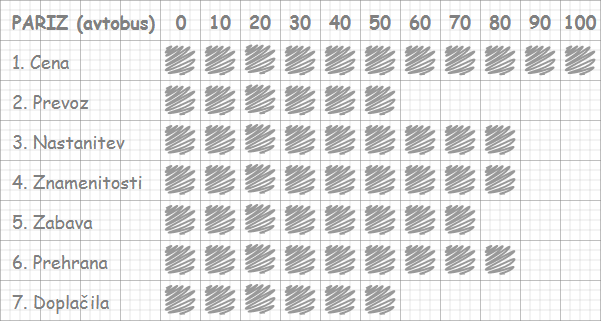
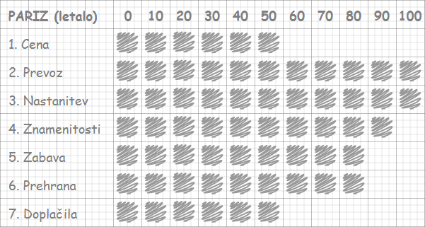

Licenca
To delo je na voljo pod pogoji slovenske licence Creative Commons 2.5:
priznanje avtorstva - nekomercialno - deljenje pod enakimi pogoji.
Celotna licenca je na voljo na spletu na naslovu http://creativecommons.org/licenses/by-nc-sa/2.5/si/. V skladu s to licenco je dovoljeno vsakemu uporabniku delo razmnoževati, distribuirati, javno priobčevati, dajati v najem in tudi predelovati, vendar samo v nekomercialne namene in ob pogoju, da navede avtorja oziroma avtorje in izdajatelja tega dela. Če uporabnik delo predela, kar pomeni, da ga spremeni, preoblikuje, prevede ali uporabi to delo v svojem delu, lahko predelavo dela ponudi na voljo le pod pogoji, ki so enaki pogojem iz te licence oziroma pod enako licenco.

Uporaba pripomočkov pri odločanju
Sistematično reševanje odločitvenega problema praviloma bistveno pripomore k boljši odločitvi. Pogoj za dobro odločanje sta temeljito poznavanje problema in natančno določen cilj, ki ga želimo z odločitvijo doseči.
Z uporabo različnih pripomočkov pri odločanju si proces odločanja lahko močno olajšamo. Z njihovo pomočjo o problemu sistematično razmišljamo. Navedimo tri metode:
- Abacon sodi med najpreprostejše metode. Edina potrebna »tehnologija« sta papir in svinčnik,
- Uporaba elektronske preglednice (na primer Excel) in
- uporaba lupine ekspertnega sistema za gradnjo odločitvenega modela (na primer DEX).
Računalniška tehnologija nudi učinkovito podporo pri odločanju in tudi iskanju ustreznih podatkov, ki koristijo dobremu odločanju.
Abacon – ročna preglednica
Pri metodi Abacon uporabljamo obrazec z dvema stolpcema. V levi stolpec obrazca vpisujemo parametre, ki vplivajo na odločitev, v desni pa vrednosti parametrov. Osnovne merske lestvice so v naravnih enotah za posamezni parameter. (npr. moč v vatih, površina v m2, kakovost ocenjujemo opisno: dobro, srednje ... ali odlično, sprejemljivo, nesprejemljivo ...)
Vrednosti parametrov morajo biti urejene od najslabših do najboljših, od leve proti desni. Merske lestvice pa lahko poenotimo tako, da pripišemo parametrom vrednost od 0 do 100, pri čemer je 0 najslabša ocena za parameter, 100 pa najboljša. Pomagamo si s pripravljeno mrežo v desnem stolpcu obrazca.
Pri odločanju si pomagamo pri tej metodi tako, da v levi stolpec vpišemo parametre po pomembnosti, kakor vplivajo na odločitev. Najpomembnejši parameter je na vrhu. Variante opišemo z označevanjem vrednosti parametrov v desni stolpec.
Nato povežemo točke (oziroma pobarvamo kvadratke), ki predstavljajo vrednosti parametrov posamezne variante. S tem dobimo za vsako varianto po eno krivuljo. Ocena variante je sorazmerna s površino levo od krivulje. Varianta z največjo površino je najugodnejša.


Za uporabo vgrajene interaktivne preglednice, mora ta delovati v povezanem načinu, kar pomeni, da moraš imeti delujočo povezavo na internet.
Če povezava na internet ne deluje, lahko v nepovezanem načinu, v ustreznem programu, odpreš eno izmed spodnjih različic preglednice.
Ustrezno različico preglednice lahko odpreš tudi, če želiš videti ali spremeniti formule in funkcije, ki jih preglednica vsebuje.